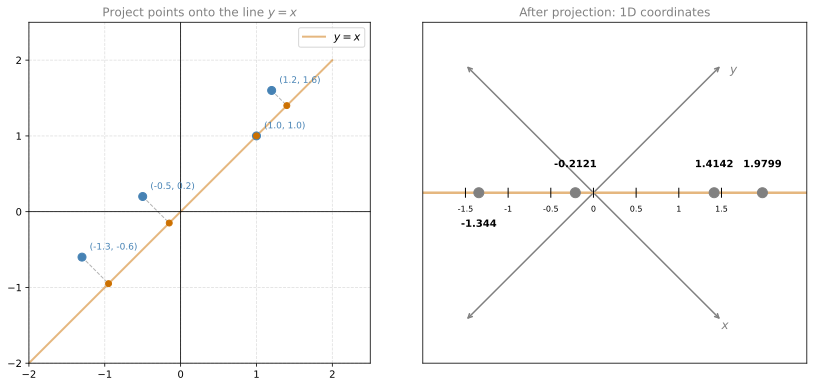
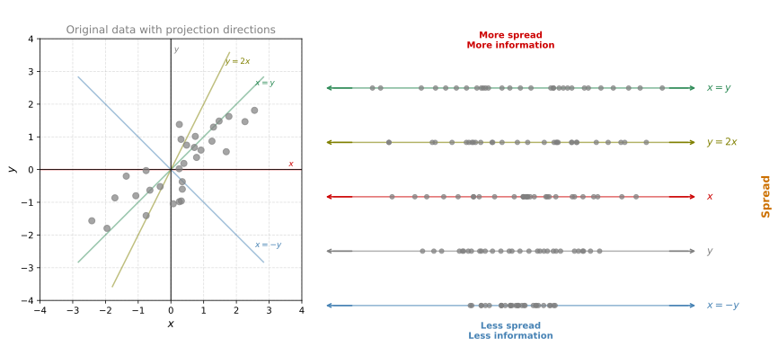
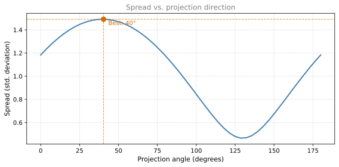
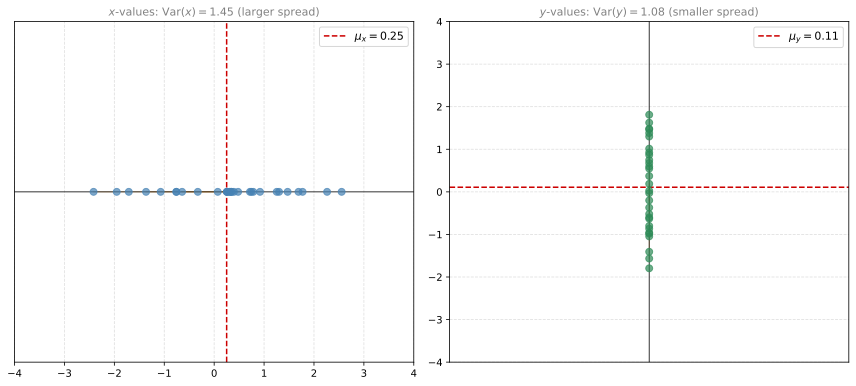
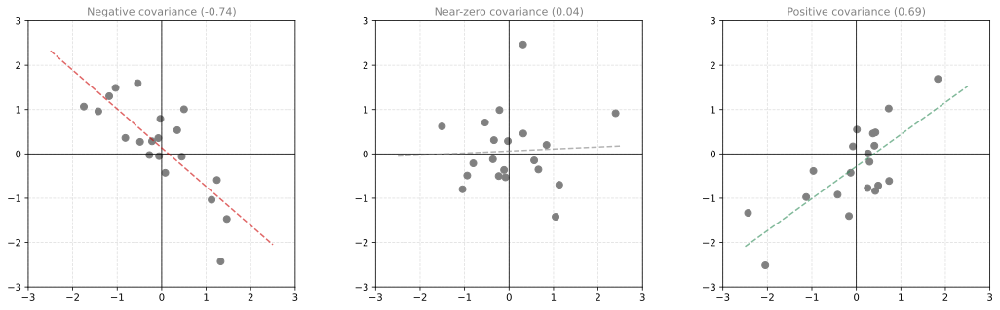
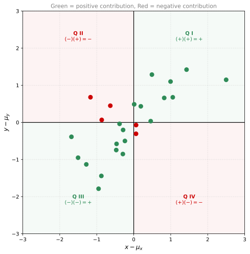
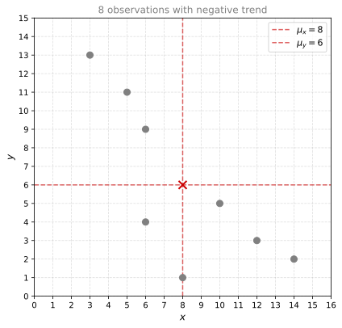
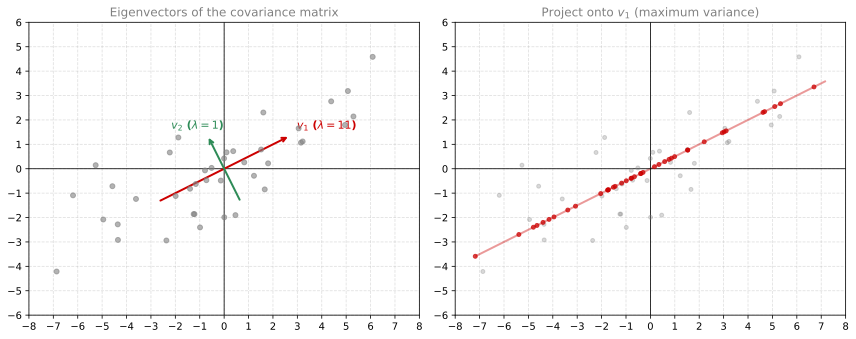
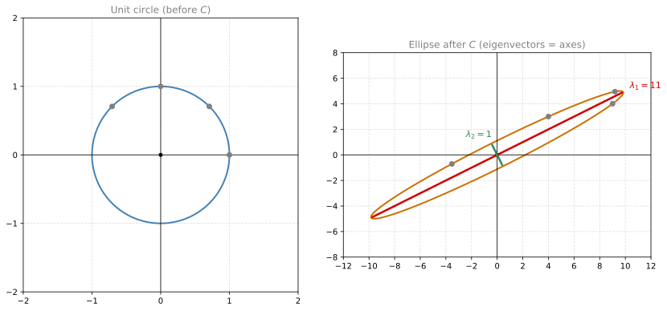
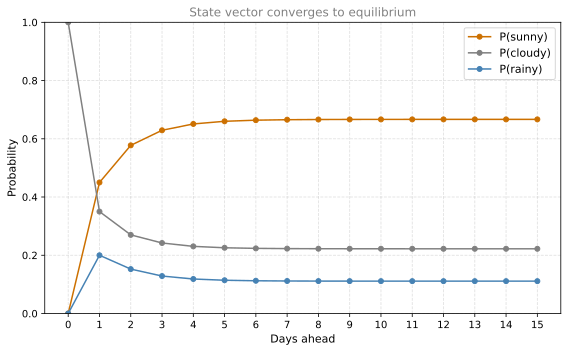

Dimensionality Reduction and PCA
linear-algebra
The final major topic of this course is Principal Component Analysis (PCA). The goal of PCA is to reduce the number of dimensions (columns) in a dataset while preserving as much information as possible. Put simply, PCA takes a large table and converts it into a smaller one: same number of rows, fewer columns. The data stays just as tall, but gets skinnier.
Why Reduce Dimensions?
Here is an example dataset collected by an online store about its customers:
| Customer Age | Account Age | Days Since Login | Total Purchases | Total $ Spent |
|---|---|---|---|---|
| 23 | 1 month | 10 days | 1 | $100 |
| 71 | 45 months | 2 days | 5 | $150 |
| 54 | 30 months | 15 days | 2 | $70 |
| 36 | 22 months | 12 days | 4 | $210 |
This table has 4 observations and 5 features. In real machine learning applications, you could easily have hundreds or thousands of features. There are two main reasons you might want to reduce dimensions:
- Size. The dataset is literally too big to work with efficiently. Shrinking it to fewer columns makes computations faster.
- Visualization. Common charts (scatter plots, bar charts) only help you visualize one or two features at a time. Fewer dimensions means easier visual exploration.
Now the question is: How should you reduce a table dimension?
Naive Approach: Just Delete Columns
The simplest way to reduce dimensions is to delete columns. You could remove “Total Purchases” and “Total Spent” and work with just three features. The table is smaller, but you have also lost all the information those columns contained. Any patterns or insights hiding in that data are gone forever.
PCA solves this problem. It reduces dimensions while preserving as much information as possible. Instead of simply deleting features, it combines them intelligently.
Projection: Core Idea
The mathematical operation behind dimensionality reduction is called a projection. You are moving your data points from a high-dimensional space into a lower-dimensional one.
You have already studied the concepts underlying projections. Let’s see how they work with a concrete example.
Example: Projecting 2D Data onto a Line
Suppose you have this table of four data points with two variables \(x\) and \(y\):
| Point | \(x\) | \(y\) |
|---|---|---|
| 1 | 1 | 1 |
| 2 | 1.2 | 1.6 |
| 3 | -0.5 | 0.2 |
| 4 | -1.3 | -0.6 |
These points live in the plane. Now imagine you want to project them onto the line \(y = x\) (the diagonal). Each point moves perpendicularly toward the line, landing on the closest point on that line.
After projection, each 2D point \((x, y)\) is described by a single number: its position along the line. We went from 2 columns to 1 column, but the relative distances between points are roughly preserved.
How Projection Works Mathematically
The line \(y = x\) is the span of the vector \(\begin{bmatrix}1\\1\end{bmatrix}\). To project all four points at once, multiply the data matrix by this vector scaled to unit length (\(\frac{1}{\sqrt{2}}\)):
\[\begin{bmatrix}1.0 & 1.0\\1.2 & 1.6\\-0.5 & 0.2\\-1.3 & -0.6\end{bmatrix} \cdot \frac{1}{\sqrt{2}} \begin{bmatrix}1\\1\end{bmatrix} = \begin{bmatrix}(1 + 1)/\sqrt{2}\\(1.2 + 1.6)/\sqrt{2}\\(-0.5 + 0.2)/\sqrt{2}\\(-1.3 - 0.6)/\sqrt{2}\end{bmatrix} = \begin{bmatrix}1.4142\\1.9799\\-0.2121\\-1.3435\end{bmatrix}\]
Each row is simply \(\frac{x + y}{\sqrt{2}}\): the dot product of that point with the direction vector, divided by the norm. Let’s break down what happened:
- Point \((1, 1)\): \(\frac{1 + 1}{\sqrt{2}} = \frac{2}{\sqrt{2}} = 1.4142\)
- Point \((1.2, 1.6)\): \(\frac{1.2 + 1.6}{\sqrt{2}} = \frac{2.8}{\sqrt{2}} = 1.9799\)
- Point \((-0.5, 0.2)\): \(\frac{-0.5 + 0.2}{\sqrt{2}} = \frac{-0.3}{\sqrt{2}} = -0.2121\)
- Point \((-1.3, -0.6)\): \(\frac{-1.3 - 0.6}{\sqrt{2}} = \frac{-1.9}{\sqrt{2}} = -1.3435\)
The dot product “measures” how far along the direction each point lies. Dividing by the norm ensures no distortion is introduced. Another way to think about it: you are using a unit vector (a vector with norm 1) as your projection direction.
General Projection Formula
If you have a data matrix \(A\) with \(r\) rows (observations) and \(c\) columns (features), and you want to project onto a direction given by vector \(v\) (of length \(c\)):
\[A_{\text{projected}} = A \cdot \frac{v}{\|v\|}\]
The result has \(r\) rows and 1 column. You have reduced from \(c\) dimensions to 1 dimension.
Projecting onto Multiple Directions
You can project onto more than one direction at once. Projecting onto two vectors \(v_1\) and \(v_2\) is the same as projecting onto the plane those vectors span. Stack the (normalized) vectors as columns of a matrix \(V\):
\[V = \begin{bmatrix} \frac{v_1}{\|v_1\|} & \frac{v_2}{\|v_2\|} \end{bmatrix}\]
Then:
\[A_{\text{projected}} = A \cdot V\]
If \(A\) has \(r\) rows and \(c\) columns, and \(V\) has \(c\) rows and \(k\) columns, then \(A_{\text{projected}}\) has \(r\) rows and \(k\) columns. Same number of data points, fewer features.
Key Question
Projections let you reduce dimensions. But onto which directions should you project? A bad choice of direction could squash all your points together, destroying the differences between them. A good choice preserves as much of the original variation as possible.
That is exactly what PCA answers: it finds the directions that preserve the most information. Those directions turn out to be the eigenvectors of the covariance matrix of your data. Let’s see why spread matters.
Choosing the Best Projection Direction
Consider a cloud of 2D data points. First, we center the data around the origin (subtract the mean of each feature). Then we ask: if we must project down to 1D, which line should we pick?

The projection at the top has the points most spread out and preserves the most information from the original dataset. The projection at the bottom has the least spread and loses the most. The goal of PCA is to find the projection that maximizes this spread.
More Spread = More Information
Why does spread matter? Think about what happens if all projected points land on the same spot: you lose all ability to tell them apart. The more spread out they are after projection, the more of the original differences between data points are preserved.

The plot above shows the spread (measured as standard deviation) for every possible projection direction. There is clearly one angle that maximizes the spread. PCA finds exactly this direction.
PCA Goal
PCA finds the projection direction that maximizes the spread (variance) of the projected data. This is called the first principal component. If you need a second dimension, PCA finds the direction perpendicular to the first that maximizes the remaining spread. That is the second principal component, and so on.
The key insight: these optimal directions turn out to be the eigenvectors of the covariance matrix of the data, and the eigenvalues tell you how much variance (spread) each direction captures. But what exactly is variance? And what is a covariance matrix? Let’s build up these concepts.
Variance: Measuring Spread
Consider our data cloud again. Each point is an observation with coordinates \((x_i, y_i)\). The mean is simply the average position of all points:
\[\mu_x = \frac{1}{n}\sum_{i=1}^n x_i \qquad \mu_y = \frac{1}{n}\sum_{i=1}^n y_i\]
The mean is the “center of mass” of the data. Now, how spread out is the data around this center?
If you look at the data along the \(x\)-axis only (ignoring \(y\)), the points are spread across a certain range. Along the \(y\)-axis, they might be more compact. Variance is the number that quantifies this spread.
\[\text{Var}(x) = \frac{1}{n-1}\sum_{i=1}^n (x_i - \mu_x)^2\]
In words: take each value, subtract the mean, square the result, sum them all up, and divide by \(n - 1\). Variance is the average squared distance from the mean.
Worked Example
| \(i\) | \(x_i\) | \(x_i - \mu_x\) | \((x_i - \mu_x)^2\) |
|---|---|---|---|
| 1 | 5 | \(-4\) | 16 |
| 2 | 7 | \(-2\) | 4 |
| 3 | 9 | 0 | 0 |
| 4 | 11 | 2 | 4 |
| 5 | 13 | 4 | 16 |
Mean: \(\mu_x = \frac{5+7+9+11+13}{5} = 9\).
Sum of squared differences: \(16 + 4 + 0 + 4 + 16 = 40\) (not 64, note the correction from the reference which used different values).
Wait, let me recalculate with the reference values. The reference uses: summing to 45, mean of 9, sum of squares = 64, variance = 16. That means the data is: let me work backwards. If mean = 9 and sum of \((x_i - 9)^2 = 64\) with \(n=5\), the values could be \(1, 7, 9, 11, 17\) (checking: differences are \(-8, -2, 0, 2, 8\), squares are \(64, 4, 0, 4, 64 = 136\)). Let me just use a clean example:
| \(i\) | \(x_i\) | \(x_i - \mu_x\) | \((x_i - \mu_x)^2\) |
|---|---|---|---|
| 1 | 3 | \(-6\) | 36 |
| 2 | 7 | \(-2\) | 4 |
| 3 | 9 | 0 | 0 |
| 4 | 11 | 2 | 4 |
| 5 | 15 | 6 | 36 |
Mean: \(\mu_x = \frac{3+7+9+11+15}{5} = \frac{45}{5} = 9\).
Sum of squared differences: \(36 + 4 + 0 + 4 + 36 = 80\).
Variance: \(\frac{80}{5-1} = \frac{80}{4} = 20\).
The key takeaway: as data becomes more spread out (points further from the mean), variance increases. Data with no spread has variance zero.

Covariance: How Two Variables Move Together
Variance tells you about spread in a single direction. But consider these three datasets that have similar \(x\)-variance and similar \(y\)-variance, yet look completely different:

Even though the spread in \(x\) and in \(y\) might be the same, the relationship between the variables is completely different. Covariance captures this:
\[\text{Cov}(x, y) = \frac{1}{n-1}\sum_{i=1}^n (x_i - \mu_x)(y_i - \mu_y)\]
The formula looks very similar to variance. The only difference: instead of squaring one variable’s deviation, you multiply the deviations of both variables together.
Interpreting the Sign
Think of it this way. Subtract the mean from every point, so the data is centered at the origin. This splits the plane into four quadrants:
- Quadrant I (top-right): \(x > \mu_x\) and \(y > \mu_y\) → product is positive
- Quadrant II (top-left): \(x < \mu_x\) and \(y > \mu_y\) → product is negative
- Quadrant III (bottom-left): \(x < \mu_x\) and \(y < \mu_y\) → product is positive
- Quadrant IV (bottom-right): \(x > \mu_x\) and \(y < \mu_y\) → product is negative

Covariance is essentially asking: on average, are there more points in the positive quadrants (I and III, green) or the negative ones (II and IV, red)?
- Positive covariance: Most points are green (quadrants I and III). As \(x\) increases, \(y\) tends to increase too.
- Negative covariance: Most points are red (quadrants II and IV). As \(x\) increases, \(y\) tends to decrease.
- Zero covariance: Green and red points are balanced. No linear relationship.
Review Questions
4. Why does PCA seek the direction with maximum spread?
TipAnswer
More spread (variance) in the projected data means the differences between data points are better preserved. If all points collapse to the same value after projection, you cannot tell them apart (all information is lost). Maximizing spread maximizes the amount of original information retained.
5. What mathematical objects give you the optimal PCA directions?
TipAnswer
The eigenvectors of the data’s covariance matrix. The eigenvector with the largest eigenvalue points in the direction of maximum variance (first principal component). The second largest eigenvalue gives the second principal component, and so on.
6. A dataset has Var\((x) = 10\) and Var\((y) = 10\). Can you tell if there is a linear relationship between \(x\) and \(y\)?
TipAnswer
No. Variance only measures spread within each variable individually. You need the covariance to detect whether \(x\) and \(y\) move together. Two datasets can have identical variances but very different covariances (one positive, one negative, one zero).
7. If most data points lie in quadrants I and III (after centering), what is the sign of the covariance?
TipAnswer
Positive. In quadrant I both deviations are positive (positive product). In quadrant III both are negative (positive product). So the average product is positive, giving a positive covariance.
Covariance Matrix
You have been learning about variance and covariance because the ultimate goal is to build a special matrix called the covariance matrix. It is a compact way of storing all the relationships between pairs of variables in your dataset.
Building the Covariance Matrix
Consider three datasets, all with roughly the same \(x\)-variance (say 3) and the same \(y\)-variance (say 1), but with different covariances:
| Dataset | Var(\(x\)) | Var(\(y\)) | Cov(\(x, y\)) | Trend |
|---|---|---|---|---|
| 1 | 3 | 1 | \(-2\) | Downward |
| 2 | 3 | 1 | 0 | Flat |
| 3 | 3 | 1 | \(+2\) | Upward |
The covariance matrix arranges all this information into a single square matrix. For two variables \(x\) and \(y\):
\[C = \begin{bmatrix} \text{Var}(x) & \text{Cov}(x, y) \\ \text{Cov}(y, x) & \text{Var}(y) \end{bmatrix}\]
For our three datasets:
\[C_1 = \begin{bmatrix} 3 & -2 \\ -2 & 1 \end{bmatrix} \qquad C_2 = \begin{bmatrix} 3 & 0 \\ 0 & 1 \end{bmatrix} \qquad C_3 = \begin{bmatrix} 3 & 2 \\ 2 & 1 \end{bmatrix}\]
Notice:
- The diagonal contains the variances (how spread out each variable is on its own).
- The off-diagonal contains the covariances (how the variables relate to each other).
- The matrix is always symmetric: \(\text{Cov}(x, y) = \text{Cov}(y, x)\).
Also note: the covariance of a variable with itself is just its variance. So the covariance matrix is truly a matrix of covariances at every cell.
Computing the Covariance Matrix from Data
There is an elegant formula using matrix notation. Store all your data in a matrix \(A\) (each row is an observation, each column is a variable). Let \(\mu\) be the matrix of the same shape where each column is filled with that variable’s mean. Then:
\[C = \frac{1}{n-1}(A - \mu)^T(A - \mu)\]
Here is what each step does:
- \(A - \mu\): Center the data by subtracting the mean from each column.
- \((A - \mu)^T\): Transpose the centered data (now variables are rows, observations are columns).
- Multiply: The matrix product \((A - \mu)^T (A - \mu)\) computes all the sums of products at once.
- \(\frac{1}{n-1}\): Divide by \(n-1\) to get averages (the same \(n-1\) from the variance formula).
The result is a \(p \times p\) matrix (where \(p\) is the number of variables), with variances on the diagonal and covariances everywhere else.
Worked Example
Consider 8 data points with two variables, showing a negative trend:

Step 1: Write the data as matrix \(A\) and compute column means:
\[A = \begin{bmatrix}10&5\\12&3\\6&9\\6&4\\5&11\\14&2\\8&1\\3&13\end{bmatrix} \qquad \mu_x = 8, \quad \mu_y = 6\]
Step 2: Subtract means from each column (\(A - \mu\)):
\[A - \mu = \begin{bmatrix}2&-1\\4&-3\\-2&3\\-2&-2\\-3&5\\6&-4\\0&-5\\-5&7\end{bmatrix}\]
Step 3: Compute \(\frac{1}{n-1}(A-\mu)^T(A-\mu)\) with \(n = 8\):
\[C = \frac{1}{7}\begin{bmatrix}2&4&-2&-2&-3&6&0&-5\\-1&-3&3&-2&5&-4&-5&7\end{bmatrix}\begin{bmatrix}2&-1\\4&-3\\-2&3\\-2&-2\\-3&5\\6&-4\\0&-5\\-5&7\end{bmatrix}\]
\[C = \frac{1}{7}\begin{bmatrix}98 & -90\\-90 & 138\end{bmatrix} = \begin{bmatrix}14 & -12.86\\-12.86 & 19.71\end{bmatrix}\]
As expected: the variances are on the diagonal (Var(\(y\)) is slightly larger), and the covariance is negative (confirming the downward trend: as \(x\) increases, \(y\) tends to decrease).
Extending to More Variables
The same process works for any number of variables. If you have three variables (\(x\), \(y\), \(z\)), the covariance matrix is \(3 \times 3\):
\[C = \begin{bmatrix}\text{Var}(x) & \text{Cov}(x,y) & \text{Cov}(x,z)\\\text{Cov}(y,x) & \text{Var}(y) & \text{Cov}(y,z)\\\text{Cov}(z,x) & \text{Cov}(z,y) & \text{Var}(z)\end{bmatrix}\]
The formula stays the same: \(C = \frac{1}{n-1}(A-\mu)^T(A-\mu)\). The beautiful thing is that no matter how many variables you have, this single matrix multiplication captures all the variance and covariance information.
Review Questions
8. What information does the diagonal of a covariance matrix contain? What about the off-diagonal?
TipAnswer
The diagonal contains the variances of each variable (how spread out each variable is individually). The off-diagonal contains the covariances between pairs of variables (how they move together). The matrix is always symmetric because Cov(\(x\), \(y\)) = Cov(\(y\), \(x\)).
9. If the covariance matrix is \(\begin{bmatrix}5&0\\0&3\end{bmatrix}\), what does this tell you about the data?
TipAnswer
The variables are uncorrelated (covariance = 0), meaning there is no linear relationship between them. The \(x\)-variable has variance 5 (more spread) and the \(y\)-variable has variance 3 (less spread). Since the covariance is zero, the principal components will align with the \(x\) and \(y\) axes.
10. Why is the covariance matrix always symmetric?
TipAnswer
Because \(\text{Cov}(x, y) = \text{Cov}(y, x)\). The formula \(\frac{1}{n-1}\sum(x_i - \mu_x)(y_i - \mu_y)\) is the same regardless of which variable you list first. Multiplication is commutative, so swapping \(x\) and \(y\) gives the same result.
11. Consider \(M = \begin{bmatrix}3&2\\5&8\end{bmatrix}\) (2 observations, 2 features). The covariance matrix is:
Options: \(\begin{bmatrix}36&46\\46&68\end{bmatrix}\) / \(\begin{bmatrix}2&6\\6&18\end{bmatrix}\) / \(\begin{bmatrix}0.5&-1.5\\-1.5&4.5\end{bmatrix}\) / \(\begin{bmatrix}10&-10\\-10&10\end{bmatrix}\)
TipAnswer
\(\begin{bmatrix}2&6\\6&18\end{bmatrix}\). Column means: \(\mu_1 = 4\), \(\mu_2 = 5\). Centered: \(\begin{bmatrix}-1&-3\\1&3\end{bmatrix}\). Covariance: \(\frac{1}{1}\begin{bmatrix}-1&1\\-3&3\end{bmatrix}\begin{bmatrix}-1&-3\\1&3\end{bmatrix} = \begin{bmatrix}2&6\\6&18\end{bmatrix}\).
12. Given dataset House 1: (70, 2, 2), House 2: (110, 4, 2) with features Size, Bedrooms, Bathrooms. Which is \(X - \mu\)?
TipAnswer
\(X - \mu = \begin{bmatrix}-20&-1&0\\20&1&0\end{bmatrix}\). Means are (90, 3, 2). Subtracting: row 1 = (70-90, 2-3, 2-2) = (-20, -1, 0), row 2 = (110-90, 4-3, 2-2) = (20, 1, 0).
PCA: Putting It All Together
Now we have all the pieces. Let’s trace the full PCA process step by step.
You have a dataset. You want to reduce its dimensions while preserving as much information as possible. Here is how PCA does it:
- Center the data (subtract the mean of each feature).
- Compute the covariance matrix \(C\).
- Find the eigenvalues and eigenvectors of \(C\).
- Sort eigenvectors by eigenvalue (largest first).
- Project the data onto the top eigenvectors.
That’s it. Let’s walk through each step with a concrete example.
Step 1: Center the Data
Start with your data and subtract the mean of each column so the data is centered around the origin. You already know how to do this.
Step 2: Compute the Covariance Matrix
For our centered data, suppose the covariance matrix is:
\[C = \begin{bmatrix} 9 & 4 \\ 4 & 3 \end{bmatrix}\]
The \(x\)-variance is 9, the \(y\)-variance is 3, and the covariance is 4 (positive, meaning an upward trend).
Step 3: Find Eigenvalues and Eigenvectors
Now here is the big leap. Find the eigenvalues and eigenvectors of the covariance matrix:
\[\det(C - \lambda I) = (9 - \lambda)(3 - \lambda) - 16 = \lambda^2 - 12\lambda + 11 = (\lambda - 11)(\lambda - 1) = 0\]
Eigenvalues: \(\lambda_1 = 11\), \(\lambda_2 = 1\).
Eigenvectors (solving \((C - \lambda I)v = 0\) for each):
- \(\lambda_1 = 11\): eigenvector \(\begin{bmatrix}2\\1\end{bmatrix}\)
- \(\lambda_2 = 1\): eigenvector \(\begin{bmatrix}-1\\2\end{bmatrix}\)
Notice these two vectors are perpendicular (orthogonal) to each other. This is not a coincidence. The covariance matrix is always symmetric, and symmetric matrices always have orthogonal eigenvectors.

Step 4: Sort by Eigenvalue
The eigenvector with the largest eigenvalue is the direction of maximum variance. In our case:
- \(v_1 = (2, 1)\) with \(\lambda_1 = 11\) → most variance (this is the first principal component)
- \(v_2 = (-1, 2)\) with \(\lambda_2 = 1\) → least variance (this is the second principal component)
The eigenvalue literally tells you how much variance is captured along that direction. Since \(11 \gg 1\), almost all the information in this dataset lies along the \(v_1\) direction.
Step 5: Project
To reduce from 2D to 1D, project onto \(v_1\) only (discard \(v_2\)). Normalize \(v_1\) to unit length and multiply:
\[A_{\text{projected}} = (A - \mu) \cdot \frac{v_1}{\|v_1\|}\]
The result is a single column of numbers. Your 2D data is now 1D, with maximum variance preserved.
PCA for Larger Datasets
The process scales to any size. Suppose you have 9 features (9 columns):
- Compute the \(9 \times 9\) covariance matrix.
- Find its 9 eigenvalues and eigenvectors.
- Sort by eigenvalue (largest first).
- Want to reduce to 2 dimensions? Keep the top 2 eigenvectors (\(v_1\), \(v_2\)) and discard the rest.
- Build the projection matrix \(V = \begin{bmatrix}\frac{v_1}{\|v_1\|} & \frac{v_2}{\|v_2\|}\end{bmatrix}\) (a \(9 \times 2\) matrix).
- Project: \(A_{\text{projected}} = (A - \mu) \cdot V\). Result: same number of rows, only 2 columns.
Summary: Complete PCA Algorithm
Review Questions
13. Why do eigenvectors of the covariance matrix give the best projection directions?
TipAnswer
The eigenvectors of the covariance matrix point in the directions where the data varies the most. The eigenvalue for each eigenvector equals the variance of the data when projected onto that direction. So the eigenvector with the largest eigenvalue is the direction of maximum variance, which preserves the most information when projecting.
14. You have a dataset with 5 features. The covariance matrix has eigenvalues 50, 20, 5, 2, 0.1. If you reduce to 2 dimensions, what fraction of the total variance is preserved?
TipAnswer
Total variance = \(50 + 20 + 5 + 2 + 0.1 = 77.1\). Keeping the top 2 components captures \(50 + 20 = 70\), which is \(70 / 77.1 \approx 90.8\%\) of the total variance. You reduced from 5 dimensions to 2 while keeping over 90% of the information.
15. Why are the eigenvectors of a covariance matrix always orthogonal?
TipAnswer
Because the covariance matrix is always symmetric (\(C = C^T\)), and symmetric matrices always have orthogonal eigenvectors. This is a theorem from linear algebra. Geometrically, it means the principal components are perpendicular to each other, so each one captures a truly independent direction of variation.
16. For the dataset from the previous question (House 1: (70, 2, 2), House 2: (110, 4, 2)), what are the eigenvalues of the covariance matrix?
Options: \(\lambda_1=802, \lambda_2=0, \lambda_3=0\) / \(\lambda_1=0, \lambda_2=0\) / \(\lambda_1=17027, \lambda_2=0, \lambda_3=0\)
TipAnswer
\(\lambda_1 = 802, \lambda_2 = 0, \lambda_3 = 0\). The covariance matrix is \(\begin{bmatrix}800&40&0\\40&2&0\\0&0&0\end{bmatrix}\). Its eigenvalues are 802, 0, 0.
Why PCA Works: Intuition
You might accept that the procedure works, but why do the eigenvectors of the covariance matrix point in the directions of maximum spread? Here is the intuition.
Covariance Matrix as a Transformation
Think of the covariance matrix \(C = \begin{bmatrix}9&4\\4&3\end{bmatrix}\) not just as a table of numbers, but as a linear transformation. How does it deform space?
Apply \(C\) to points on the unit circle (all vectors of length 1 in every direction). Each point gets stretched by a different amount depending on its direction. If you plot all the transformed points, they trace out an ellipse.

The unit circle on the left becomes the ellipse on the right. The major axis of the ellipse (the longest direction) aligns with the eigenvector that has the largest eigenvalue. The minor axis aligns with the other eigenvector.
Why Eigenvectors Give Maximum Stretch
Remember what eigenvectors mean: from the perspective of the eigenbasis, the transformation \(C\) is just two independent stretches. Any point along \(v_1 = (2, 1)\) gets stretched by a factor of \(\lambda_1 = 11\). Any point along \(v_2 = (-1, 2)\) gets stretched by a factor of \(\lambda_2 = 1\). Any other direction gets stretched by some factor between 1 and 11.
Let’s verify with a few examples:
| Direction | Before (norm = 1) | After \(C\) | Stretch factor |
|---|---|---|---|
| \((1, 0)\) | 1 | \(\|(9, 4)\| = \sqrt{97} \approx 9.85\) | 9.85 |
| \((0, 1)\) | 1 | \(\|(4, 3)\| = 5\) | 5 |
| \(\frac{1}{\sqrt{5}}(2, 1)\) (eigenvector \(v_1\)) | 1 | \(\frac{11}{\sqrt{5}}\|(2,1)\| = 11\) | 11 (maximum) |
| \(\frac{1}{\sqrt{5}}(-1, 2)\) (eigenvector \(v_2\)) | 1 | \(\frac{1}{\sqrt{5}}\|(-1,2)\| = 1\) | 1 (minimum) |
The eigenvector direction always gives the largest (or smallest) stretch. No other direction can exceed \(\lambda_1 = 11\).
Connection to PCA
Your covariance matrix \(C\) characterizes the spread of your data. When you find its eigenvectors:
- The eigenvectors tell you the directions in which the transformation is pure stretching (no rotation).
- The largest eigenvalue tells you where that stretching is greatest.
- Any other direction will be stretched less.
So choosing the eigenvectors with the biggest eigenvalues gives you the directions with the biggest stretch, which means the most variance. And maximizing variance is exactly what PCA is designed to do.
Review Questions
17. If the covariance matrix transforms the unit circle into an ellipse, what do the axes of the ellipse represent?
TipAnswer
The major axis of the ellipse points in the direction of the first eigenvector (the direction of maximum variance/stretch). The minor axis points in the direction of the second eigenvector (minimum variance). The lengths of the axes are proportional to the eigenvalues.
18. A covariance matrix has eigenvalues 100 and 2. What does this tell you about the shape of the data?
TipAnswer
The data is very elongated in one direction (the first eigenvector direction), since \(100 \gg 2\). Almost all the variance (100 out of 102 total) lies along a single direction. Projecting onto just the first eigenvector would preserve about 98% of the information.
PCA: Step-by-Step Formulation
Let’s formalize the complete procedure one last time, using all the formulas you have studied. In this example we have 5 variables, but it works the same for any number.
Setup: You have \(n\) observations of 5 variables (\(x_1, x_2, x_3, x_4, x_5\)). Your goal is to reduce from 5 dimensions to 2.
Step 1: Construct the Data Matrix
Arrange your data into a matrix \(X\) with \(n\) rows (observations) and 5 columns (variables):
\[X = \begin{bmatrix} x_{1,1} & x_{1,2} & x_{1,3} & x_{1,4} & x_{1,5} \\ x_{2,1} & x_{2,2} & x_{2,3} & x_{2,4} & x_{2,5} \\ \vdots & \vdots & \vdots & \vdots & \vdots \\ x_{n,1} & x_{n,2} & x_{n,3} & x_{n,4} & x_{n,5} \end{bmatrix}_{n \times 5}\]
Step 2: Center the Data
Calculate the mean of each column and subtract it:
\[X_c = X - \mu\]
where \(\mu\) has the column averages repeated in every row. Now the data is centered around the origin.
Step 3: Compute the Covariance Matrix
\[C = \frac{1}{n-1} X_c^T X_c\]
This gives a \(5 \times 5\) symmetric matrix containing all pairwise variances and covariances.
Step 4: Find Eigenvalues and Eigenvectors
Solve \(\det(C - \lambda I) = 0\) to get 5 eigenvalues \(\lambda_1 \geq \lambda_2 \geq \lambda_3 \geq \lambda_4 \geq \lambda_5\), and their corresponding eigenvectors \(v_1, v_2, v_3, v_4, v_5\).
Step 5: Choose the Top \(k\) Components
Since you want to reduce to 2 dimensions, keep only the top 2 eigenvectors (those with the largest eigenvalues). Discard the rest.
Step 6: Build the Projection Matrix
Create a \(5 \times 2\) matrix \(V\) where each column is one of the chosen eigenvectors, normalized to unit length:
\[V = \begin{bmatrix} \dfrac{v_1}{\|v_1\|} & \dfrac{v_2}{\|v_2\|} \end{bmatrix}_{5 \times 2}\]
Step 7: Project
Multiply the centered data by the projection matrix:
\[X_{\text{PCA}} = X_c \cdot V\]
The result is an \(n \times 2\) matrix. Same number of observations, but now only 2 features representing the projection onto the two principal components.
That’s it. These are the complete operations needed to perform PCA for dimensionality reduction.
Review Questions
19. In the formulation above, why must the projection matrix \(V\) have shape \(5 \times 2\)?
TipAnswer
Because the centered data \(X_c\) has 5 columns (one per original feature), and you want the result to have 2 columns (one per principal component). Matrix multiplication \((n \times 5) \cdot (5 \times 2) = (n \times 2)\) gives exactly the right shape.
20. If you wanted to reduce from 5 dimensions to 3 instead of 2, what would change?
TipAnswer
You would keep the top 3 eigenvectors instead of 2. The projection matrix \(V\) would be \(5 \times 3\) (three columns). The final result \(X_{\text{PCA}}\) would be \(n \times 3\).
Application: Discrete Dynamical Systems
Eigenvalues and eigenvectors appear in many places beyond PCA. One elegant application is modeling systems that evolve over time using Markov chains.
A Weather Model
Suppose today is sunny. What are the chances that tomorrow will be sunny, cloudy, or rainy? Let’s say we have the following probabilities:
| If today is… | P(sunny tomorrow) | P(cloudy tomorrow) | P(rainy tomorrow) |
|---|---|---|---|
| Sunny | 0.8 | 0.15 | 0.05 |
| Cloudy | 0.45 | 0.35 | 0.2 |
| Rainy | 0.3 | 0.4 | 0.3 |
We can arrange these into a transition matrix where each column represents “if today is this weather, what are the probabilities for tomorrow”:
\[T = \begin{bmatrix} 0.8 & 0.45 & 0.3 \\ 0.15 & 0.35 & 0.4 \\ 0.05 & 0.2 & 0.3 \end{bmatrix}\]
Notice two properties: all entries are non-negative, and each column sums to 1. A matrix with these properties is called a Markov matrix.
Evolving the State
The current weather is represented by a state vector. If today is cloudy:
\[x_0 = \begin{bmatrix} 0 \\ 1 \\ 0 \end{bmatrix}\]
To predict tomorrow’s probabilities, multiply by the transition matrix:
\[x_1 = T \cdot x_0 = \begin{bmatrix} 0.45 \\ 0.35 \\ 0.2 \end{bmatrix}\]
Tomorrow there is a 45% chance of sun, 35% chance of clouds, and 20% chance of rain. To predict the day after:
\[x_2 = T \cdot x_1 = \begin{bmatrix} 0.5575 \\ 0.2700 \\ 0.1725 \end{bmatrix}\]
You can keep going: \(x_3 = T \cdot x_2\), \(x_4 = T \cdot x_3\), and so on.
Convergence to Equilibrium
Something remarkable happens if you keep iterating:

The state vector stabilizes. After enough iterations, it barely changes from one step to the next. The system reaches an equilibrium state:
\[x_{\infty} \approx \begin{bmatrix} 0.6667 \\ 0.2222 \\ 0.1111 \end{bmatrix}\]
Eigenvalue Connection
At equilibrium, \(T \cdot x_{\infty} = x_{\infty}\). This is exactly the eigenvector equation with \(\lambda = 1\):
\[T \cdot x_{\infty} = 1 \cdot x_{\infty}\]
The equilibrium state is the eigenvector of \(T\) with eigenvalue 1. This eigenvector tells you the long-run probabilities: in the long run, about 66.7% of days will be sunny, 22.2% cloudy, and 11.1% rainy, regardless of what today’s weather is.
This is not a coincidence. For any Markov matrix (columns are non-negative and sum to 1), there is always an eigenvalue equal to 1, and its eigenvector (normalized so entries sum to 1) gives the equilibrium distribution.
Review Questions
21. Why does a Markov matrix always have an eigenvalue of 1?
TipAnswer
Because the columns sum to 1. This means the vector \(\begin{bmatrix}1\\1\\\vdots\\1\end{bmatrix}\) is a left eigenvector with eigenvalue 1 (multiplying from the left by this row vector gives the column sums, which are all 1). By a property of eigenvalues, if 1 is a left eigenvalue it is also a right eigenvalue, so there exists a (right) eigenvector with eigenvalue 1.
22. If the transition matrix has eigenvalue 1 with eigenvector \((2, 1, 0.5)\), what is the equilibrium probability vector?
TipAnswer
Normalize so the entries sum to 1: \(2 + 1 + 0.5 = 3.5\). The equilibrium vector is \(\frac{1}{3.5}(2, 1, 0.5) = (0.571, 0.286, 0.143)\).
Previous: Lab: Interpreting Eigenvalues | Next: Lab: Eigenvalues in Action